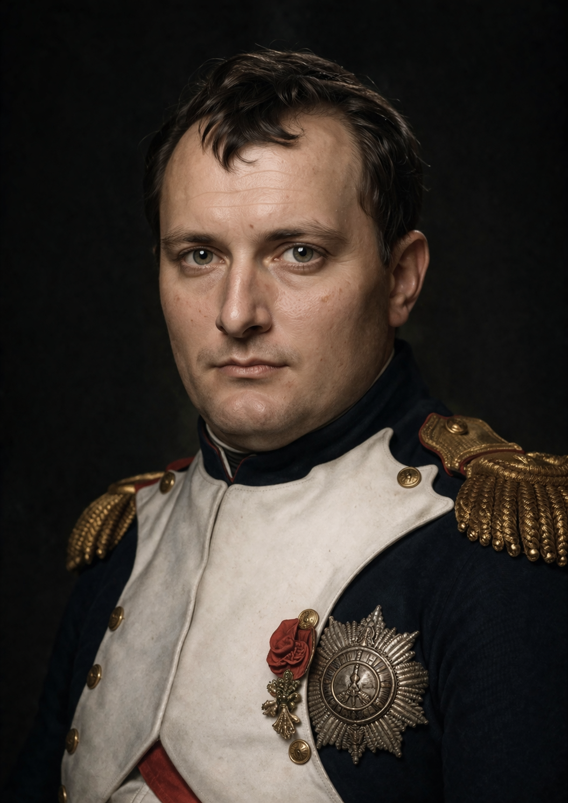

Empereur • Chef militaire • Réformateur
Napoléon Bonaparte est né en 1769 en Corse, peu de temps après que l’île a été rattachée à la France. Issu d’une famille d’origine italienne, il part très jeune étudier dans des écoles militaires françaises. Pendant sa formation, il s’intéresse particulièrement à la stratégie, à l’histoire et à l’art de gouverner. Ses professeurs remarquent rapidement son intelligence, sa discipline et son ambition.
Napoléon devient officier dans l’armée française et se distingue pendant la Révolution française. Grâce à plusieurs victoires militaires importantes, il gagne rapidement en prestige et en influence. Ses campagnes en Italie à la fin des années 1790 le rendent très célèbre en France et en Europe. Il montre un grand talent stratégique et une forte capacité de leadership.
En 1799, Napoléon prend le pouvoir lors du coup d’État du 18 Brumaire et devient Premier Consul. Quelques années plus tard, en 1804, il se fait couronner empereur des Français. Son objectif est de stabiliser la France après les troubles révolutionnaires et de renforcer la puissance du pays. Il réorganise l’administration, centralise le pouvoir et cherche à moderniser l’État.
Napoléon mène de nombreuses campagnes militaires à travers l’Europe. Certaines batailles deviennent célèbres, comme la victoire d’Austerlitz en 1805, souvent considérée comme l’un de ses plus grands succès stratégiques. Cependant, ses ambitions militaires deviennent de plus en plus vastes. Certaines campagnes difficiles, notamment l’invasion de la Russie en 1812, affaiblissent fortement son armée.
Après plusieurs défaites militaires, Napoléon est contraint d’abdiquer en 1814 et est exilé sur l’île d’Elbe. Il revient cependant brièvement au pouvoir pendant la période des Cent-Jours. En 1815, il est définitivement vaincu lors de la bataille de Waterloo. Il est ensuite envoyé en exil sur l’île de Sainte-Hélène dans l’Atlantique, où il meurt en 1821.
Napoléon Bonaparte reste l’une des figures les plus importantes et les plus controversées de l’histoire européenne. Beaucoup admirent son génie militaire, son ambition et les réformes qu’il a introduites, comme le Code civil qui influence encore le droit dans de nombreux pays. D’autres critiquent les nombreuses guerres qu’il a menées et le caractère autoritaire de son pouvoir. Malgré ces débats, son influence sur la France et l’Europe reste considérable.